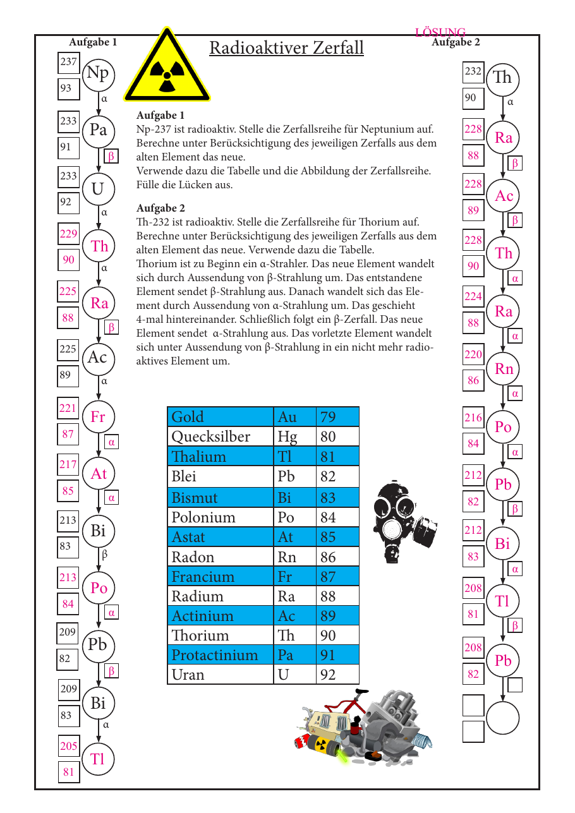
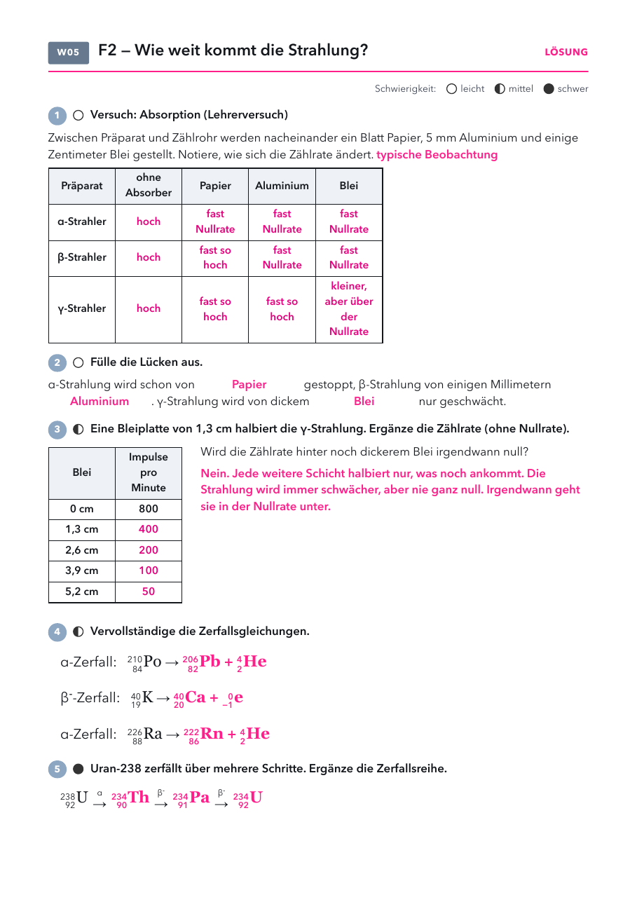

Klasse 10 · Physik · W05 (Woche ab 12.10.2026) · Leitfrage 2
| Material | Anzahl | Hinweis |
|---|---|---|
| Präparate α, β, γ | je 1 | nur Lehrkraft, nach RiSU |
| Geiger-Müller-Zählrohr mit Zählgerät | 1× | |
| Absorber: Papier, Aluminium 5 mm, Bleiplatten | je 1 | mehrere gleich dicke Bleiplatten, falls vorhanden |
| Material | Anzahl | Hinweis |
|---|---|---|
| Periodensystem | 1× |
Labore zur Stunde: 🧪 Strahlungslabor


| im Alltag | was man sieht | warum |
|---|---|---|
| Bleischürze beim Röntgen | schützt die übrigen Körperteile | Blei schwächt energiereiche Strahlung stark. |
| Rauchmelder | darf man anfassen | Die α-Strahlung kommt nicht einmal durch das Gehäuse. |
| Behälter für radioaktive Stoffe | dicke Wände aus Stahl oder Blei | γ-Strahlung wird nur geschwächt, nie ganz gestoppt. |
| im Alltag | was man sieht | warum |
|---|---|---|
| Schweißnaht prüfen | Risse werden sichtbar | γ-Strahlung durchdringt Stahl, hinter einem Riss kommt mehr an. |
| Papier- oder Folienfabrik | Dicke wird ständig gemessen | Je dicker das Material, desto weniger β-Strahlung kommt durch. |
| Leck in einer Leitung | Zählrohr findet die Stelle | Man gibt einen kurzlebigen Strahler ins Wasser. Am Leck steigt die Zählrate. |
| Schädlinge bekämpfen | Insekten ohne Gift | Bestrahlte Männchen sind unfruchtbar, es schlüpft kein Nachwuchs. |
So steht es am Ende der Stunde im Heft: Überschriften abschreiben, Zeichnungen abzeichnen, Merksätze abschreiben, die Antwort auf die Leitfrage. Beobachte-, Alltags- und Check-Folien kommen nicht ins Heft. „Fortsetzung“ heißt: im Heft ohne neue Überschrift weiterschreiben.
Zerfallsgleichungen üben mit sofortiger Rückmeldung, Absorberversuch mit Papier, Aluminium und Blei, Bleidicke per Regler mit Kurve und Nullrate.
Seite 1 leer zum Austeilen, Seite 2 dein Original ausgefüllt als Lösung (steht auch auf Folie 3).
Lösung: α hinter Papier fast Nullrate, β hinter Aluminium fast Nullrate, γ hinter Blei kleiner, aber über der Nullrate. Lücken: Papier, Aluminium, Blei. Bleitabelle 800, 400, 200, 100, 50, die Zählrate wird nie ganz null. Po-210 → Pb-206 + He-4, K-40 → Ca-40 + e, Ra-226 → Rn-222 + He-4. Zerfallsreihe Th-234, Pa-234, U-234.